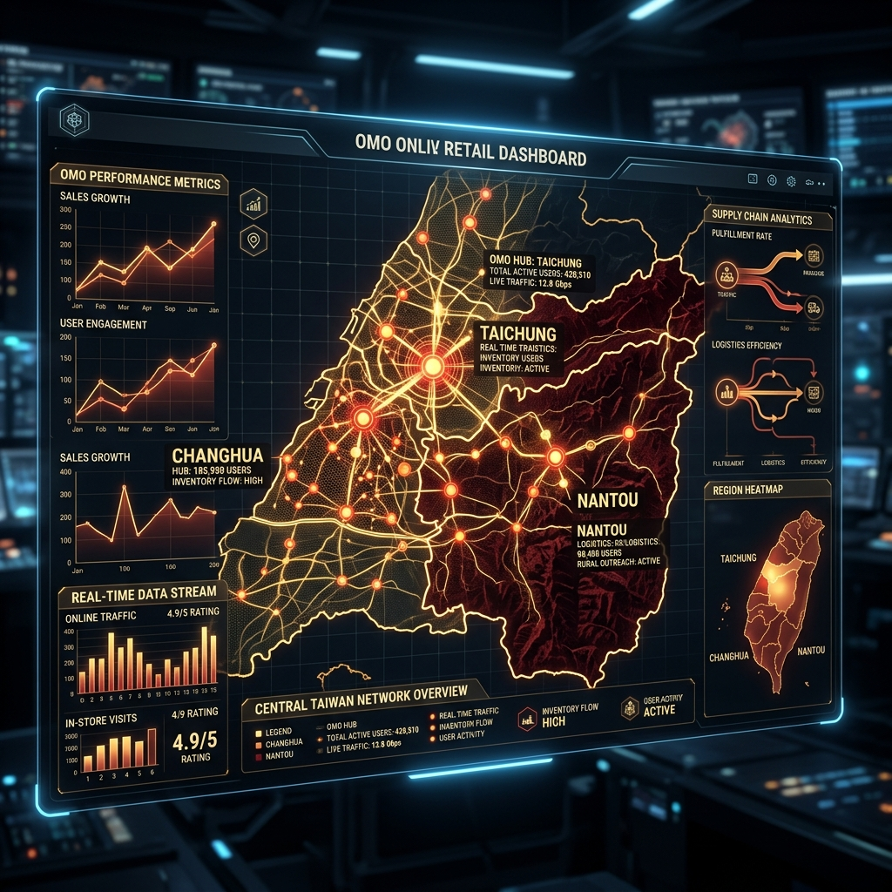

跨越時空的對話：將數位零售的「全通路整合」與「數據分析」邏輯導入百年信仰網絡，讓傳統文化在數位時代中焕發新生。
現代零售巨頭如 SHOPLINE 強調跨場景的 OMO（線上與線下整合）與流量獲取，而南瑤宮老二媽會在數百年前就以傳統的組織規約，實現了近乎一致的「全通路整合」邏輯：

傳統文化與前沿科技的完美融合
| 整合維度 (Dimension) | SHOPLINE 數位零售整合 | 南瑤宮老二媽會傳統信仰整合 |
|---|---|---|
| 整合對象 | 線上網店、實體門市 (POS)、社群購物平台 | 地理角頭據點、信徒會員、三年輪辦進香活動 |
| 核心技術 | 雲端後台、API 串接、數據分析系統 (Shoplytics) | 傳統神明會規約、理監事制度、笨港進香歷史慣例 |
| 涵蓋範圍 | 全球或跨國市場 (台、港、日、澳等) | 區域型信仰圈 (橫跨台中、彰化、南投三縣市) |
| 最終目標 | 提升業績、降低門市營運成本、優化消費者體驗 | 延續宗教信仰、恭祝聖誕、凝聚信徒情感與向心力 |
引進 Shoplytics 與 Smart OMO 概念，將傳統信仰活動指標化，幫助管理者告別低效圖表，以精準的第一方數據進行智慧決策。
透過大數據分析信徒參與文化活動的頻率 (Frequency) 與最近一次參與時間 (Recency)。將信眾「智慧分群」為資深核心、中生代主力與新生代隨香者。針對不同特徵的群體，推送差異化的活動通知與文化宣傳，提升老二媽信仰在年輕世代中的認同度。
信徒在實體廟宇角頭參與神誕與進香，其線上參與足跡（如點閱行腳直播、預約點光明燈、訂閱特製香火袋等）則透過數位帳號串接。管理層能一站式掌握全通路參與熱潮，確保線上資訊發布能精準導流至實體遶境隊伍，創造「零斷點」的文化體驗。